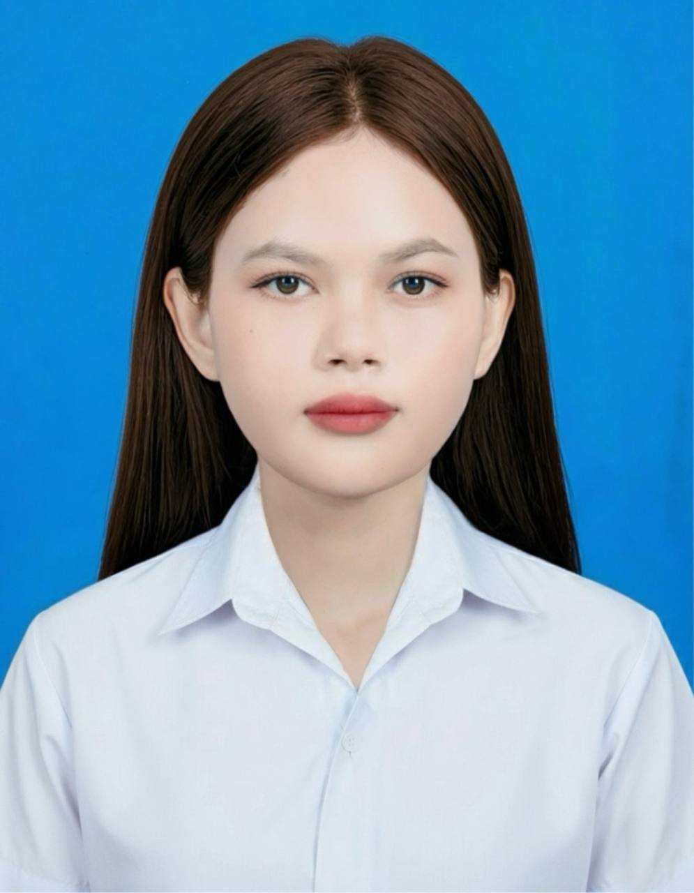

Contact Information
| Street 53BT |
 |
| MaenChey, Phnom Penh | |
| Tel: 097-290-1412 | |
| Email: kanpharaket@gmail.com |
Education
- 2024 - Present: Computer Science Student at Royal University of Phnom Penh
- 2021 - 2024: Cambodia-Japan Friendship Kampot Krong High School
Experience
- 2025 - Present: Footprints International School - Teaching Assistant
- 2024 - 2025: Taught English to children aged 6–12 in small classes.
- 2024: Taught basic math to students in grades 10–11.
Skills
- Communication, Creativity, Team Work, Kindness, Reliability, Technical Writing, Presentation
- Microsoft Word, Excel, PowerPoint , Canva